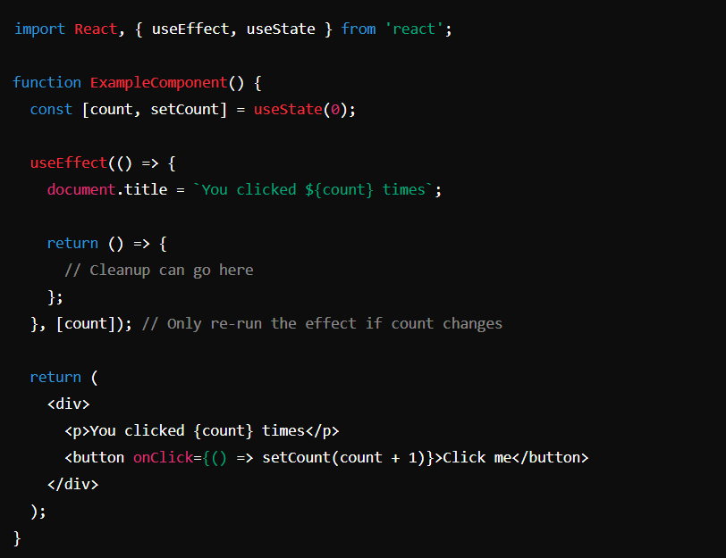
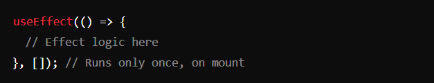
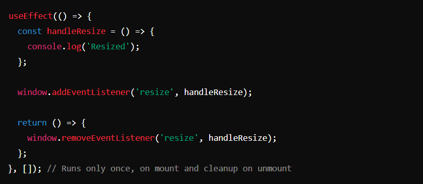
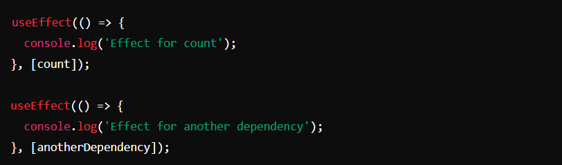

Introduction
React's useEffect hook is a powerful feature for managing side effects in functional components. Side effects can include fetching data, directly manipulating the DOM, setting up subscriptions, and more. Prior to hooks, managing these effects required class components and lifecycle methods like componentDidMount, componentDidUpdate, and componentWillUnmount. With useEffect, you can handle all these scenarios in a functional component.
Basic Usage
The useEffect hook takes two arguments: a function (the effect) and an optional array of dependencies. The function runs after the initial render and after every update unless specified otherwise.
Dependencies Array
The second argument to useEffect is an array of dependencies. The effect runs only when one of the dependencies has changed. If the array is empty, the effect runs only once, similar to componentDidMount.
CleanUp
The effect function can return a cleanup function, which React will run before the effect runs again and when the component unmounts. This is useful for cleanup tasks like removing event listeners or canceling network requests.
Multiple `useEffect` hooks
You can use multiple useEffect hooks within a single component to separate concerns.
